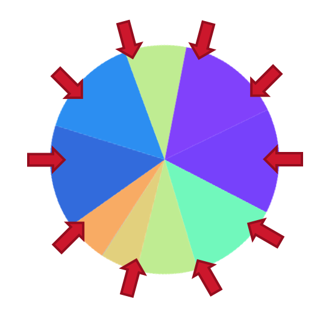

Selection¶
The selection process aims to mimic natural selection where individuals that are unfit do not survive. In the selection stage, the fittest individuals selected to survive and enter into the gene pool where they will have the opportunity to reproduce. Selection schemes can be classified as a proportional selection where selection is proportional to the fitness score or ordinal selection if it depends on the rank of the fitness score
When designing the selection mechanism selection pressure needs to be taken into account. The selection pressure describes the degree of bias towards fitter chromosomes. A high selection pressure highly favours the individuals with the best fitness score. While this may greatly improve the overall fitness of the following generation, the population is at risk of becoming homogenous and result in a poor exploration of the solution space. If however the selection pressure is too low, evolution can be quite slow.
Tournament selection¶
In tournament selection, n tournaments are hosted, and the winner of each tournament goes into the gene pool. For each tournament, 2 participants are chosen from the population and the individual with the better fitness score will win with probability win_rate otherwise the indiviual with the lower fitness score will win. You can change the selection pressure by adjusting win_rate. Tournament selection is a type of ordinal selection method as it is based on the rank of an individual's fitness score.
tournament(ind_1, ind_2, win_rate, gene_pool):
if individual_1.fitness_score > individual_2.fitness_score:
rank_1 = individual_1
rank_2 = individual_2
else:
rank_1 = individual_2
rank_2 = individual_1
r <- randomly generated number
if r < win_rate:
gene_pool <- rank_1
else:
gene_pool <- rank_2
Roulette wheel selection¶
In roulette wheel selection, a roulette wheel is constructed where each slice represents an individual of the population and the area is proportional to its fitness score.
For a maximisation problem:
For minimisation problems, the fitness score first needs to be inverted. One way to invert the fitness score is to subtract the fitness score from the maximum fitness score of the generation and adding 1 [Cox05].
Traditionally, the roulette wheel is spun N times with a single marker, and whichever individual the marker lands on enters into the gene pool. One issue with this is that usually the population of the GA is quite small, so while unlikely, it is possible that all spins select bad to mediocre individuals. Stochastic universal sampling [Bak87] was proposed to counter this problem. Instead of spinning the wheel N times, N markers are placed uniformly around the wheel and the wheel is spun once. Each marker then selected one individual to enter into the mating pool.
{kind=link}
The main issue with roulette wheel selection is that initially, a small percentage of the population have comparatively excellent fitness scores and so will dominate the wheel, which results in a high selection pressure. As the population converges, the selection pressure decreases because all individuals will have similar fitness scores.
- Bak87
James E. Baker. Reducing bias and inefficiency in the selection algorithm. In Proceedings of the Second International Conference on Genetic Algorithms on Genetic Algorithms and Their Application, 14–21. Hillsdale, NJ, USA, 1987. L. Erlbaum Associates Inc. URL: http://dl.acm.org/citation.cfm?id=42512.42515.
- Cox05
E. Cox. Fuzzy Modeling and Genetic Algorithms for Data Mining and Exploration. Morgan Kaufmann series in data management systems. Elsevier/Morgan Kaufmann, 2005. ISBN 9780121942755. URL: https://books.google.com.au/books?id=H93cJpnbwpcC.